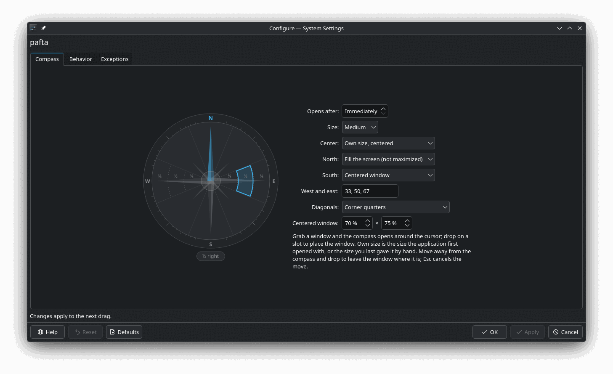

pafta
Grab a window and a compass opens under the cursor. Drop it on a slot and the window takes that place. A KWin script for KDE Plasma 6.
The compass
- North fills the screen without maximizing. South centers the window at 70 × 75 %.
- West and east hold widths: ⅓, ½ and ⅔ from the hub outwards, full height.
- Diagonals are the four corner quarters.
- The hub puts the window back to its own size: the size the application first opened with, or the last size you gave it by hand.
- Move away from the compass and drop to leave the window where it is. Esc cancels the move.
Each slot can be changed, and the compass can wait for the cursor to rest before it opens. pafta also remembers where applications were placed and restores un-maximized windows to their place. Plasma's own tiles (Meta+T, Shift+drag) are left as they are.
Settings
System Settings → Window Management → KWin Scripts → pafta → configure. Changes apply to the next drag.

Install
KDE Plasma 6. Developed on Plasma 6.8 (Wayland).
git clone https://github.com/to1un/pafta kpackagetool6 --type=KWin/Script --install pafta/package
Then tick pafta in KWin Scripts and press Apply. Updating and removing are in the README.